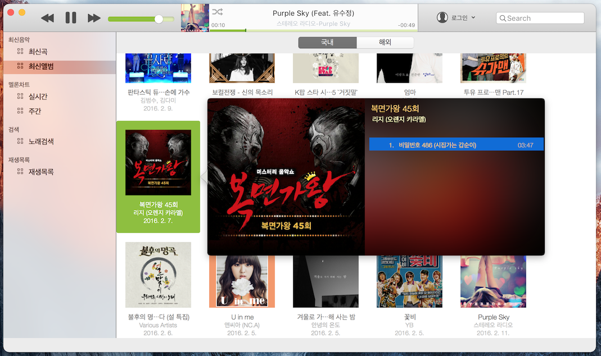

맥용 멜론 
만들고 깜박해버린 맬론. 1년이 지난거 같지만 시간난김에 마무리 하여 올립니다. API 도 곧 정리해서 올릴생각중. iOS 버전을 리버싱해서 만든거라 모바일로 인식. 그래서 모바일스트리밍권이 있는 사람만 사용가능. 시작은 다운로드가 안되서 만들었으나. 다운로드 기능은 숨기고 공개. 모바일 기반이라 다운로드 기능이 저작권 문제에 걸릴까 혹시 있을지 몰라서... API에 기능은 구현되어있으니. 개인적으로 만들어 보실분들은 만들어 보셔도 될듯. UI는 여러차례 바뀌다 그냥 맥스럽게 iTunes 와 비슷하게 진행 OSX 10.10 이상에서만 구동되게 했지만 10.10 에서는 테스트를 못해봤네요. 일단 메뉴는 최신리스트 위주로 구현되어있고 마이리스트는 차후에... 정말 이기능은 필요하다! 라고 생각 되시는게 있으면 알려주세요.
* 버그는 당연히 많을듯..
- 1.0.2 -
키보드 미디어 재생 버튼 지원
- 1.0.1 -
SystemStatus바에 컨트롤러 추가